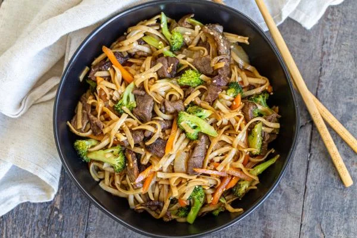

Home
Beef Lo Mein

Description
If you haven't tried lo mein before, you are probably wondering what the heck it is. In short, lo mein is a stir-fried noodle dish. Long, soft egg noodles are tossed with a savory and sweet sauce and either beef or chicken. The end result is a bowl of slurpy deliciousness! Yields 6 servings.
Ingredients
- 8 oz lo mein noodles
- 1 tsp sesame oil
- 1/4 cup hot boiled water
- 1 tbsp Beef Better Than Bouillon
- 3 tbsp soy sauce
- 2 tbsp brown sugar
- Oil (olive or sesame) for frying
- 1 lb beef
- 2 large carrots
- 2 cup broccoli
- 1 large onion
- 4 garlic cloves
Steps
- Into hot, boiled water add Better Than Bullion and brown sugar; stir to dissolve. Into the mixture, add soy sauce and set aside.
- Dice carrots, broccoli and onion into two-inch pieces. Pre slice beef into very thin strips. Using a hot skillet with sesame oil, cook beef until it's golden brown, remove from the skillet and set aside.
- Using the same skillet that was used to cook beef, saute onions until golden brown with sesame oil. Remove from the skillet. In the same skillet, saute carrots until softened, add broccoli and cook for about three minutes. Add onion back to the pan. Press garlic into the mixture.
- Add cooked beef into the skillet with vegetables. Pour sauce over the ingredietns and let them simmer for about 2 minutes.
- Add cooked noodles and toss everything together.
- Into a large dish, combine noodles, vegetables and beef. Toss to bring everything together and serve while it's still hot.